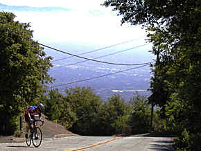
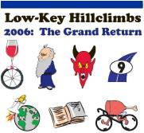

,
then pick up your video at Bicycle Outfitter starting 7 Dec!
You might call the shop ahead of time to check for availability.
,
then pick up your video at Bicycle Outfitter starting 7 Dec!
You might call the shop ahead of time to check for availability.
We have a special, high-resolution video of the Highway 9, Page Mill Road, and Mt Hamilton climbs full of interviews and low-key action!
Only $5 (whattadeal!) Send $5 via PayPal to
,
then pick up your video at Bicycle Outfitter starting 7 Dec!
You might call the shop ahead of time to check for availability.
You awaken, coated in sweat. A glance out the window... darkness. The dream is fading, but the fear remains. The fear, the fear of the pain. Ahh, the memory is returning... the hill... the hill... You try to suppress it. But you cannot. The hill is there. You know, the knowledge saturating your total being, that it is hopeless. You are destined to return. Again and again. There is no escape. Accept the fear. Embrace the pain.
Returning again, after a seven-year hiatus: a catalyst of the pain, a channel for the fear, the Low-Key Hillclimbs. You are ready.
The philosophy of the Low-Key series is to allow each cyclist, no matter what his or her level, no matter what his or her speed, to establish goals, and meet them. It's all about the hill, the rider, and being at one with the bike. We'll see you there.
| week | date | time | climb | format | coordinator & helpers |
results |
|---|---|---|---|---|---|---|
| 1 | 14 Oct 2006 | 10 am | Montebello | mass start | Fred Butts Carola Berger Sheri Greenspan Leo Menestrina |
results! photos! |
| 2 | 21 Oct 2006 | 10 am | OLH | small groups | Carola Berger Sheri Greenspan Marianne Lipanovich Patt Baenen Fred Butts |
results! photos! |
| 3 | 28 Oct 2006 | 10 am | Mt Diablo (North Gate) | mass start | Meredith Nielsen (Left Coast) Marsha (Left Coast) Cara Coburn Barry Burr Leo Menestrina Sheri Greenspan |
results! photos! |
| 4 | 04 Nov 2006 | 10 am | Highway9 | mass start | Greg Dougald John Franklin Carola Berger Leo Menestrina Sheri Greenspan |
results! photos! video! |
| 5 | 11 Nov 2006 | 10 am | Bohlman-On Orbit | mass start | Patt Baenen Kelly Kasik Marianne Lipanovich Penny Hutchinson Alexandra May |
canceled |
| 6 | 18 Nov 2006 | 10 am | Page Mill Road | time trial | James Porter Ingrid Erkman Scott Frake Patt Baenen Penny Hutchinson Dan Connelly Brenda Brunner Sheri Greenspan |
results! photos1 photos2 photos3 video! |
| 7 | 23 Nov 2006 | 9:30 am | Thanksgiving Day: Mt Hamilton | mass start | Fred Butts Leo Menestrina Penny Hutchinson Bernadette Corneau Ian Sowden Sheri Greenspan Brenda Brunner |
results! photos! video! |
|  |
| On Orbit Lane, chainreaction.com |
Each week, overall points will be allocated in men's and women's categories, with standings also recorded in rider-defined categories -- pick your own! Overall series rankings will also be maintained, with riders accumulating points from their up to four best results.
Team scores will also be kept, with points to the top three from each team.
Ride with an established team, or create one just for the series!
Check here if you want more details!
We need volunteers to make this series work! Volunteers get two free rides for each one at which they help out, plus get pro-rating of points so they don't miss out on overall standings. Coordinators get three freebies.
Each week, registration will open an hour before the listed time, closing 15 minutes before. No pre-reg. $10 entry fee. Under 18 years old are free! Waivers available at registration. Two free entries if you volunteer, three if you're a coordinator!
All profits go to the Lance Armstrong Foundation and John Peckham's family. For more information about John Peckham, see altovelo.org.
If you can, you'll want to print and fill out the PDF release form before the event.
|  |
| The Low-Key Polo Shirt, suitable for all occasions. |
We have an email list! See http://sports.groups.yahoo.com/group/lkhc/.
To avoid congestion and other headaches please do the following:
Better yet, ride to the start, or take public transit! The relaxed Low-Key 10am start time make riding and/or taking the train an excellent option. See Caltrain's website for train schedules, or 511.org for BART and bus options. Bike route info is also available from 511.org.
The low-keys are just what you want them to be. We do time and keep track of times and points, but by no means is that the main reason for these climbs. They're for having fun, checking out the area climbs, and meeting people.
A wide spectrum of folks climb this series - and you can create your own team and category, or call yourself something like Mr. Slug - or whatever you want.
I hear this year we'll even have a couple unicyclists... yes, it's true...
For those new to Low-Keyin', the process is simple:
It's pretty cool. And, as is tradition, all riders and especially all volunteers and coordinators enjoyed each others 2006 company one last time at the Low-Key HillClimbs Party on 5 Dec. See you next year!
Email Kevin Winterfield:
{kind=link}